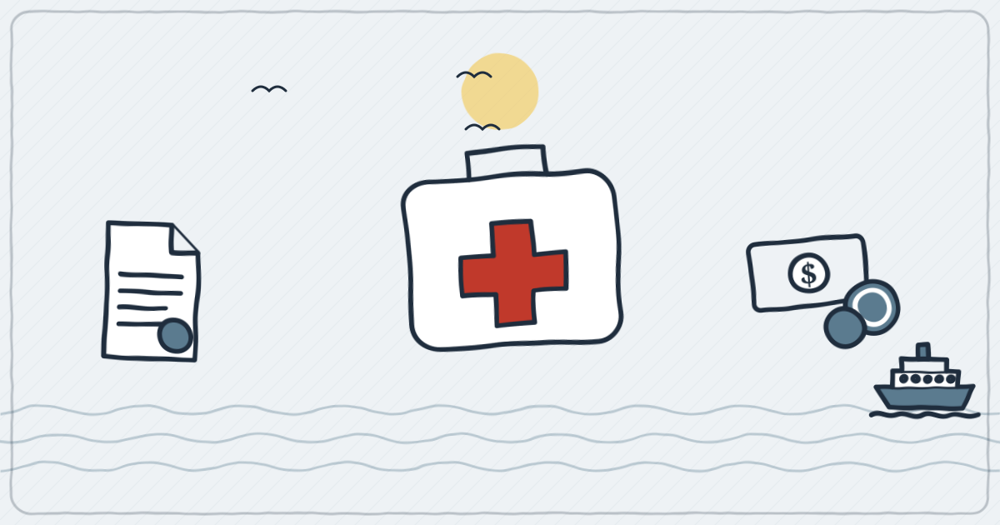

Cruise Travel Insurance for Canadians: What OHIP Won't Pay
Buy a travel medical and cancellation policy the day you pay your cruise deposit, with emergency medical of at least $5 million, evacuation from a ship named in the wording, and cancellation that covers the whole trip cost. Provincial health plans pay a token amount abroad and nothing useful at sea.

Your provincial health card is close to worthless on a cruise. Whether you carry OHIP, MSP, AHCIP, RAMQ or any other provincial plan, the moment the ship leaves Canadian waters you are on your own for medical bills, and the ship's medical centre charges even inside them. The fix is a travel medical and cancellation policy, bought on the day you pay the deposit. This note explains what it has to cover and how to pick one.
Does OHIP or your provincial plan cover you on a cruise?
Barely, and in Ontario's case not at all. Ontario stopped reimbursing out-of-country emergency care in January 2020. The other provinces still pay something towards a hospital stay abroad, but it is a fixed daily amount in the tens or low hundreds of dollars against US hospital bills that run into the thousands per day. None of them pay for:
- Treatment in a ship's medical centre, which bills privately to your onboard account
- A helicopter or air-ambulance evacuation from a ship
- A medical flight home once you are stable
- A relative's travel to be with you
Alaska cruises from Vancouver spend most of their week in US ports. Caribbean cruises start in the US. Even a round trip from Vancouver to Hawaii is outside provincial cover from the second day. Treat every cruise as a foreign trip, because for billing purposes it is.
What a cruise insurance policy must include
A cruise is not a beach holiday with a boat attached. The sea adds three risks that an ordinary travel policy may not name: getting off the ship for treatment, getting back to the ship after a missed connection, and the fare becoming non-refundable months before you sail.
The checklist:
- Emergency medical of $5 million or more, with evacuation from a vessel named in the policy wording, not just "medical transportation"
- Trip cancellation for the full prepaid cost, including flights, the pre-cruise hotel and any land tour, not just the cruise fare
- Trip interruption that pays to rejoin the ship at the next port or fly home early
- Missed connection written for cruises, so a delayed flight to the port is covered even if you make it to the ship a day late
- A trip-length limit that covers you from the day you leave home to the day you get back, not just the cruise dates
- A pre-existing condition stability period you can honestly meet for every condition and every medication change
Baggage cover and cabin-confinement payments are nice extras. They are not reasons to choose one policy over another.
Cruise line plan vs Canadian insurer vs credit card
| Cruise line protection plan | Canadian travel insurer | Credit card cover | |
|---|---|---|---|
| Medical limit | Often US$10,000 to 25,000 | $5 million and up | Varies; check the certificate |
| Cancellation | Generous, but refunds may be future cruise credit | Cash, full trip cost if sized correctly | Only if the trip was charged to the card |
| Evacuation from a ship | Usually included, modest limit | Included, high limit | Often excluded or capped |
| Age limits | Few | Priced by age band | Many cut off at 65 or 70 |
| Trip-length limit | Cruise dates only | Whole trip, you set the dates | Often 15 to 31 days |
| Best for | Flexible cancellation on a US-booked cruise | Medical cover, which is the big risk | Short trips, younger travellers, as a top-up |
Many experienced Canadian cruisers buy a strong medical policy from a Canadian insurer and treat the cruise line's plan as optional. The cruise line plan is good at one thing, letting you cancel late, and weak at the thing that can cost six figures.
How much cruise insurance costs in Canada
Two numbers drive the price: the trip cost for cancellation cover, and your age and health for medical cover.
Medical-only cover for a healthy traveller under 50 on a one-week cruise is cheap, often less than the ship's gratuities. Cancellation cover is what pushes the total up, and it is the part worth sizing carefully: insure the amount you would actually lose after final payment, not the brochure price.
Pre-existing conditions and the stability clause
This is where claims get refused. Most Canadian policies cover a pre-existing condition only if it has been "stable" for a set period before the trip, typically 90, 180 or 365 days depending on age and policy. Stable means no new diagnosis, no new or changed medication, no new symptoms and no pending tests.
What counts as a change
A dose adjustment counts. A new prescription for the same condition counts. A specialist referral that has not happened yet usually counts. If any of those happened inside the stability window, say so when you buy: an honest declaration with an exclusion is far better than a refused claim after a US hospital stay.
Over 60 or 65
Expect a medical questionnaire. Answer it with your prescription list in front of you, because an innocent mistake on it can void the policy. If you cruise more than once a year, an annual multi-trip policy is often cheaper than two single-trip ones, but check its per-trip length limit against a long cruise.
When to buy, and the known-event trap
Buy on the day you pay the deposit. Cancellation cover only responds to things that happen after the policy starts, so a policy bought a month before sailing will not pay if the reason for cancelling began before that date. Some optional benefits, including most cancel-for-any-reason add-ons, must be bought within a short window of the first payment. If illness strikes at the last minute, what to do when you're sick the day before a cruise sets out the order of calls that keeps the claim intact.
A named hurricane, an announced strike or a travel advisory already in force is a "known event". Insurance bought after the announcement will not cover it. If the line itself cancels, the rules in when the cruise line cancels your sailing apply instead and you are owed a refund regardless of insurance.
If you need the ship's doctor
Call the insurer's emergency assistance line before agreeing to anything beyond a basic consultation, if you possibly can. Hospital admission ashore and evacuation usually need the insurer's pre-approval to be paid in full. The ship charges treatment to your onboard account and gives you an itemised invoice; keep it, along with every report and receipt, because the claim will be assessed from paper.
Pregnancy, CPAP users and travellers with mobility equipment each have extra wrinkles: see pregnancy limits by cruise line and taking a CPAP on a cruise.
Want this checked for your own sailing? A licensed cruise consultant can price it up and answer questions for free, with no obligation.
Ask a cruise expert →The short version
Buy at deposit. Insure the whole trip, door to door. Make sure evacuation from a ship is named, the medical limit is in the millions, and you can honestly meet the stability clause. Ten minutes with the policy wording now saves a very bad afternoon in a foreign hospital later.
Questions people also ask
Does OHIP cover medical care on a cruise ship?
No. Ontario ended out-of-country reimbursement in 2020, and the other provinces pay only a small daily amount towards hospital care abroad, nothing for a ship's doctor and nothing for an evacuation. A single night in a US hospital can cost more than most people's annual holiday budget.
Is my credit card's travel insurance enough for a cruise?
Sometimes, for a short trip and a younger traveller. Check the certificate for the medical day limit, the age cut-off, whether the full trip had to be charged to the card for cancellation cover, and whether evacuation from a vessel is included. Many cards fail at least one of those for a cruise.
How much does cruise insurance cost in Canada?
Cancellation cover usually runs at 5 to 10 percent of the trip cost. Emergency medical depends mainly on age and declared conditions: modest for travellers under 50, several times more over 70. Quote two or three insurers, because the same trip can be priced very differently.